«ОТЛОВИТЬ» ПЕРВЫЙ ЗАПУСК
ИНФОРМАЦИОННОЙ СИСТЕМЫ
Сложность: **
Теги: константы, форма, клиент, сервер, программное открытие формы
ЗАДАНИЕ
После установки программы пользователю нужно заполнить некоторые параметры для дальнейшей работы. Без этого корректная работа программы невозможна.
Необходимо сделать так, чтобы при первом запуске системы открывалась форма с параметрами.
Признаком первого запуска будет служить константа со значением «ЛОЖЬ».
Для упрощения задачи форму следует открыть с простым текстом-декорацией «Обнаружен первый запуск программы!».
q Создать новую информационную базу.
q Открыть информационную базу в режиме «Конфигуратор».
q Открыть окно конфигурации.
Подробнее о том, как это сделать, смотрите в Лабораторной работе № 2 (стр. 17).
В первую очередь, нужно создать константу.
Информация
Константы нужны для хранения информации, которая практически никогда не меняется (а если меняется, то очень редко). Про константы подробнее можно прочитать здесь: https://v8.1c.ru/platforma/konstanta/.
Создадим новую константу «ПервыйЗапускОсуществлен». Тип значения – «Булево».
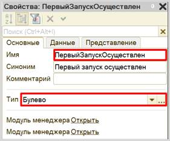
Напомним, что тип данных «Булево» подразумевает, что в данной константе могут находиться только значения «Истина» или «Ложь».
Данная константа должна имитировать первый запуск системы. Если константа содержит значение «Ложь» при запуске программы в режиме «1С:Предприятие», то следует оповестить пользователя о том, что это первый запуск системы. Если константа содержит значение «Истина», то при запуске программы окно с оповещением открываться не должно.
Для оповещения пользователя следует создать форму.
Определение
Форма – это окно, отображающее какую-либо информацию. Формы в 1С бывают различными: они могут принадлежать отдельным объектам конфигурации, например, справочникам. Также существуют общие формы, которые не привязаны к объектам конфигурации (подробнее про формы можно прочитать здесь: https://v8.1c.ru/platforma/formy/).
Для решения поставленной задачи нужно создать именно общую форму.
Создадим общую форму «УведомлениеОПервомЗапуске».
Подсказка
Объект конфигурации «Общие формы» находится во вкладке «Общие» окна дерева конфигурации.
При создании формы открывается конструктор общих форм. На первом шаге нужно указать название формы и ее тип. Тип создаваемой формы – произвольная. Обязательно поставьте галочку «Использовать стандартные команды».
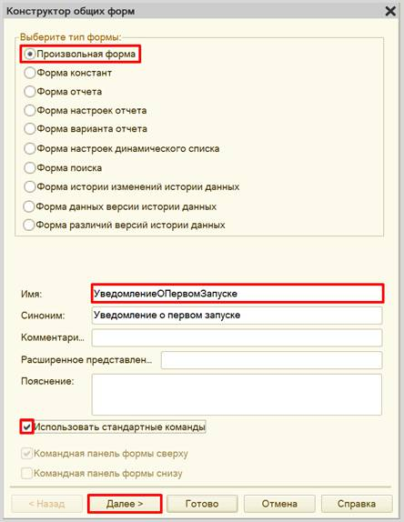
Так как у произвольной формы нет связанного объекта, то на втором шаге нам выбрать нечего, поэтому можно нажать кнопку «Готово».
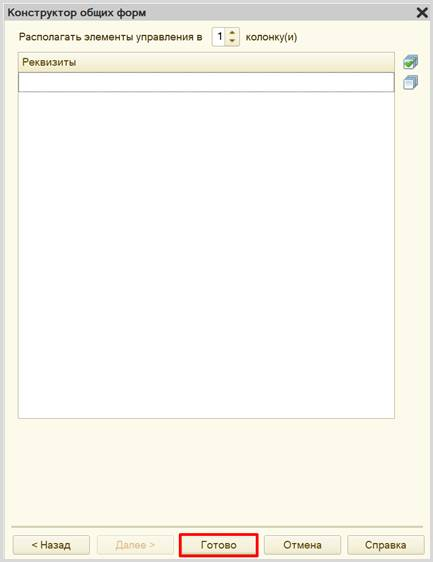
Открылся конструктор управляемой формы.
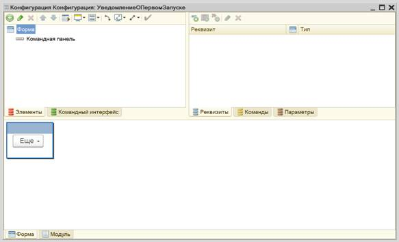
q Снизу находится область предпросмотра формы. Она позволяет лишь приблизительно понять, как будет отображаться данная форма для пользователя, поскольку может быть изменена с учетом множества различных факторов. Это своеобразная «иллюзия» того, что увидит пользователь.
q В правой верхней области находятся данные, которые мы вообще можем использовать в каком-либо виде на этой форме. Они разделены по вкладкам «Реквизиты», «Команды» и «Параметры».
q В левой верхней области конструктора форм описывается, какие именно данные будут изображены на форме, и то, как они будут выглядеть. Здесь – две вкладки: «Элементы» и «Командный интерфейс». На вкладке «Элементы» настраивается внешний вид и расположение реквизитов на форме. Вкладка «Командный интерфейс» определяет положение команд (кнопок) на форме.
Добавим новый элемент формы: «Декорация – Надпись».
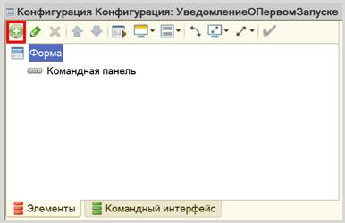
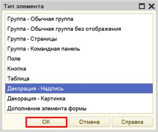
Среди элементов формы появится элемент «Декорация1», а также откроется палитра свойств данного элемента. Добавим заголовок: «Обнаружен первый запуск программы!» и посмотрим на результат в области предпросмотра.
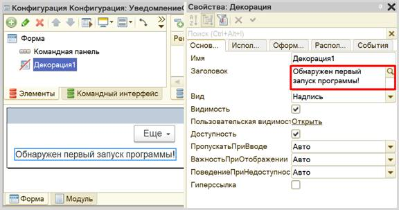
На вкладке «Оформление» можно настроить размер и цвет новой декорации.
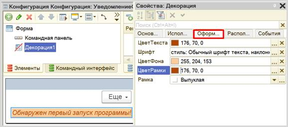
Данная форма будет выводиться пользователю, если константа содержит значение «Ложь». Но необходимо также добавить команду (кнопку формы), с помощью которой пользователь сможет указать системе, чтобы в дальнейшем эта форма не открывалась.
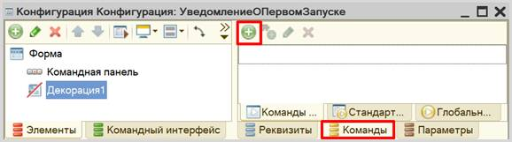
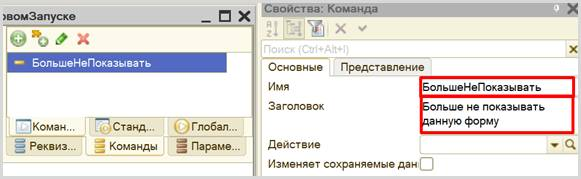
Перетащим команду на форму. Для этого следует «зажать» кнопку мыши на команде и перетащить ее на форму.
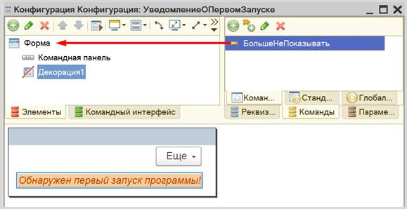
Команда автоматически встанет вслед за декорацией. Причем команда предстала перед нами как элемент формы «Кнопка».
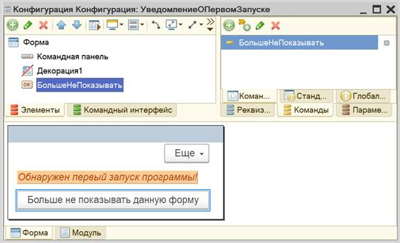
Если запустить систему в режиме «1С:Предприятие», то кнопка на форме будет, но она не будет совершать никаких действий, поскольку мы их еще не описали. Вернемся к этому чуть позже.
Вторая часть задачи заключается в том, чтобы «поймать» момент запуска системы, потому что именно в этот момент должна произойти проверка константы и открытие формы.
Алгоритмы, происходящие при запуске системы, описываются в модуле приложения. Найти этот модуль можно в контекстном меню корня конфигурации.
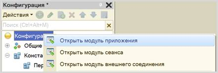
Открывается пустой модуль приложения. Для удобства разработчик может воспользоваться шаблонами некоторых процедур и функций. Откроем список процедур и выберем процедуру «ПриНачалеРаботыСистемы».
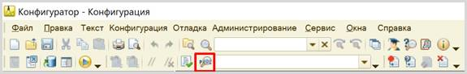
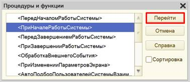
Система создала описание процедуры.
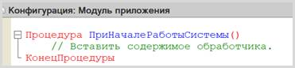
Наша задача состоит в том, чтобы прочитать значение константы и, если значение константы «Ложь», открыть форму.
Но получить данные константы, которая хранится в базе данных, напрямую из формы приложения мы никак не сможем. Это связано с тем, что модуль приложения выполняется на стороне клиента, а к базе данных получить доступ можно только со стороны сервера.
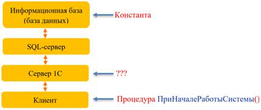
Чтобы разобраться, как устроено клиент-серверное взаимодействие, рассмотрим конкретный пример.
Предположим, пользователь хочет сформировать отчет.
1. Клиент нажимает на кнопку «Сформировать».
2. Запрос отправляется на Сервер 1С.
3. Сервер 1С отправляет запрос SQL-серверу.
4. SQL-сервер запрашивает данные из
информационной базы и формирует таблицы.
5. Заполненные таблицы SQL-сервер отправляет Серверу 1С.
6. Сервер 1С рисует форму отчета и отправляет отчет клиенту в простом и понятном для него виде, например, таблицей или диаграммой.
Таким образом, для того, чтобы получить любые данные из базы данных, нужно обратиться к серверу. Как это сделать?
Для получения контекста сервера необходимо создать общий модуль «Сервер». Обязательно нужно проставить галочки у свойств «Сервер» и «Вызов сервера».
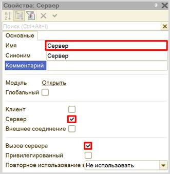
Включение свойства «Сервер» означает, что данный модуль будет выполняться на стороне сервера. Включение свойства «Вызов сервера» значит, что клиентские модули (например, созданная нами ранее форма) смогут обращаться к данному модулю и использовать его процедуры и функции.
Опишем в общем модуле функцию «ЭтоПервыйЗапуск».
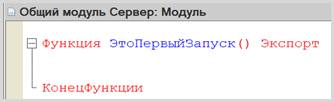
Служебное слово «Экспорт», указанное после названия функции, делает ее видимой для вызова из других модулей системы.
В самой функции опишем получение константы и возврат ее перевернутого значения. Если в константе хранится значение «Истина», то есть первый запуск уже был осуществлен, то функция вернет значение «Ложь», и наоборот.
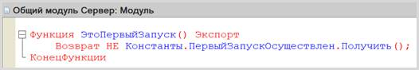
Внимание!
Обязательно проверьте модуль на наличие синтаксических ошибок.
Для этого нажмите на кнопку «Проверка модуля». Должно открыться окно «Служебные сообщения». Если синтаксических ошибок не обнаружено, то в данном окне появится надпись «Синтаксических ошибок не обнаружено».
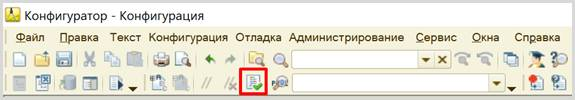
Поскольку общий модуль работает на стороне сервера, то он легко сможет получить значение константы. А служебное слово «Экспорт» позволит обратиться к этой функции откуда угодно. Значит, можно вызвать эту функцию из модуля приложения, где был подготовлен шаблон процедуры «ПриНачалеРаботыСистемы».
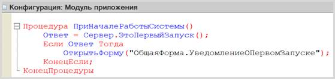
Переменной «Ответ» будет присвоено значение функции «ЭтоПервыйЗапуск», осуществляемой на стороне сервера. Затем, если в переменной «Ответ» хранится значение «Истина», будет открыта созданная форма.
Не забудьте проверить модуль на наличие синтаксических ошибок.
Запустим систему в режиме «1С:Предприятие».
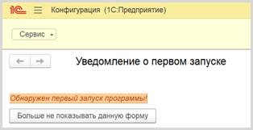
При запуске системы открылась созданная форма, уведомляющая пользователя о том, что был произведен первый запуск. Данная форма будет открываться при каждом запуске системы до тех пор, пока значение константы «ПервыйЗапускОсуществлен» не изменится на «Истина» (по умолчанию всегда «Ложь»).
Для того чтобы форма не открывалась повторно, опишем алгоритм работы кнопки, которая была добавлена на форму. Откроем редактор общей формы и в палитре свойств команды создадим новое действие, которое будет выполнять данная команда.
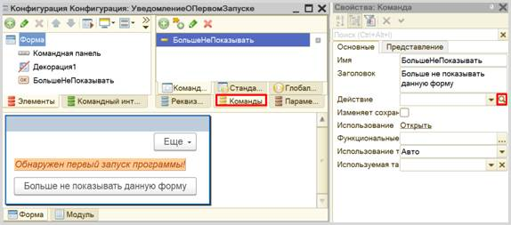
Система задаст вопрос: «Где создать обработчик команды?».
Для того чтобы сделать правильный выбор, нужно разобраться, что мы хотим сделать? Мы хотим установить значение константы в значение «Истина». Для этого нужен доступ к базе данных, следовательно, нам необходим контекст сервера. Выберем третий вариант.
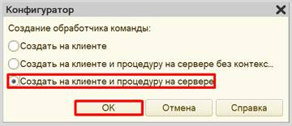
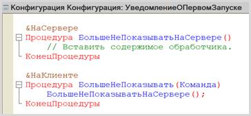
Система создала в модуле формы две процедуры: нижняя – обработчик события нажатия кнопки, верхняя – серверная процедура, которая вызывается из нижнего обработчика.
Опишем присвоение значения константе.
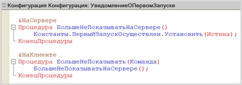
Осталось лишь закрыть форму. Форма всегда существует на клиенте, закрывать форму будем в контексте клиента.
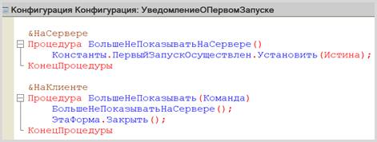
Проверьте модуль на наличие синтаксических ошибок.
Откроем систему в режиме «1С:Предприятие».
При запуске отрывается окно с уведомлением. Жмем на кнопку «Больше не показывать данную форму». Форма должна закрыться.
Проверим, изменилось ли значение константы.
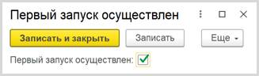
Значение константы изменилось на «Истина».
При повторном запуске системы форма с уведомлением открываться не должна.
Поставленная задача решена.